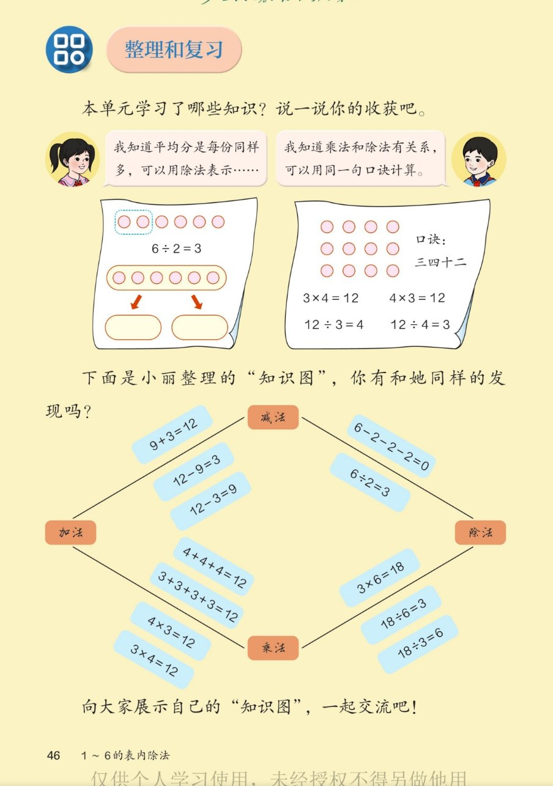

🔊 1~6的表内除法 · 课本第 46 页 · 整理和复习
人教版《数学》二年级上册 · 有声图文带读 · 先想后看解析
题数
6
认知
2
强化
3
拓展
1
本页重点
单元知识梳理 · 平均分 · 口诀 · 加减乘除知识图
🎧 分两步学：
① 解析教材图片
——纯声音读图，读到哪一块哪一块闪动提示；关键处先倒计时让你思考，再在图片下方给出解析并朗读。
② 分层提问练习
——六道分层题（认知 / 强化 / 拓展），先思考再展开解析、朗读参考答案；这一步不再回到图片。
也可以随时点任意一句话、图上任意一块单独听；点课本文字卡还会展开答案。
教材图片（点块听读，读到哪块哪块闪）

📖 人教版《数学》二年级上册 · 课本第 46 页 · 图片仅供个人学习，版权归人民教育出版社所有
🤔 想一想（点我可跳过）
课本的文字（点句子：听读 + 看答案）
单元收获
平均分用除法 · 乘除法同口诀
看答案 ▾
①
平均分
是每份同样多，可以用
除法
表示；
②
乘法和除法有关系
，可以用
同一句口诀
计算；
③ 还会解决"平均分"和"包含分"两类问题。
两张知识卡
6÷2=3 · 口诀三四十二写四式
看答案 ▾
左卡：6 个圆片
每 2 个一份
分成 3 份 →
6÷2＝3
；
右卡：12 个圆点，口诀
三四十二
：
3×4＝12、4×3＝12、12÷3＝4、12÷4＝3
。
🌈 一句口诀管四道算式
知识图
加减乘除四组算式的联系
看答案 ▾
加↔减：
9＋3＝12、12−9＝3、12−3＝9
；
减↔除：
6−2−2−2＝0
与
6÷2＝3
（连减 3 个 2 就是除以 2）；
加↔乘：
4＋4＋4＝12
与
4×3＝12
；
乘↔除：
3×6＝18、18÷6＝3、18÷3＝6
。
展示交流
做一幅自己的"知识图"
看答案 ▾
步骤：① 选一个得数（如 12）；② 写出得数是它的
加、减、乘、除
算式；③ 用箭头把
互逆
的算式连起来；④ 和同学交流你的发现。
分层提问练习（先想后看解析）
🎒
认知
本单元《1~6的表内除法》学了哪些知识？
看解析
🤔 想一想
解析：
① 平均分与
除法的初步认识
；② 除号、被除数、除数、商；
③
用 1~6 的乘法口诀求商
；④ 用除法
解决问题
。
🟠
认知
12 个圆点用口诀"三四十二"，能写出哪四个算式？
看解析
🤔 想一想
解析：
3×4＝12、4×3＝12
；
12÷3＝4、12÷4＝3
。
💡 一句口诀写出一乘两除共四式
🔗
强化
6−2−2−2＝0 和 6÷2＝3 有什么联系？
看解析
🤔 想一想
解析：
从 6 里
连续减 3 个 2
正好减完 → 6 里面有
3 个 2
；
所以
6÷2＝3
。连减几个相同的数，就是
包含除法
。
💡 除法是"连续减去相同的数"的简便算法
➕
强化
4+4+4 和 3+3+3+3 为什么得数一样？
看解析
🤔 想一想
解析：
4＋4＋4 是
3 个 4
→ 4×3＝12；3＋3＋3＋3 是
4 个 3
→ 3×4＝12；
3 个 4 和 4 个 3 都等于
12
。
💡 交换位置，得数不变——乘法的小秘密
✖️
强化
由 3×6=18 能写出哪两道除法算式？用的哪句口诀？
看解析
🤔 想一想
解析：
18÷3＝6、18÷6＝3
；
都用口诀
三六十八
。
💡 乘法算式反过来就是两道除法
🌈
拓展
像小丽那样，用得数 18 做一幅自己的知识图。
看解析
🤔 想一想
解析：
加：9＋9＝18、12＋6＝18；减：18−9＝9；
乘：
3×6＝18、2×9＝18
；除：
18÷3＝6、18÷6＝3
。
🌈 把互逆的算式连箭头，你的知识图就成了
① 解析教材图片
② 分层提问练习
⏹ 停止
纯声音 + 高亮跟随 · 想好才出解析
← 返回导航